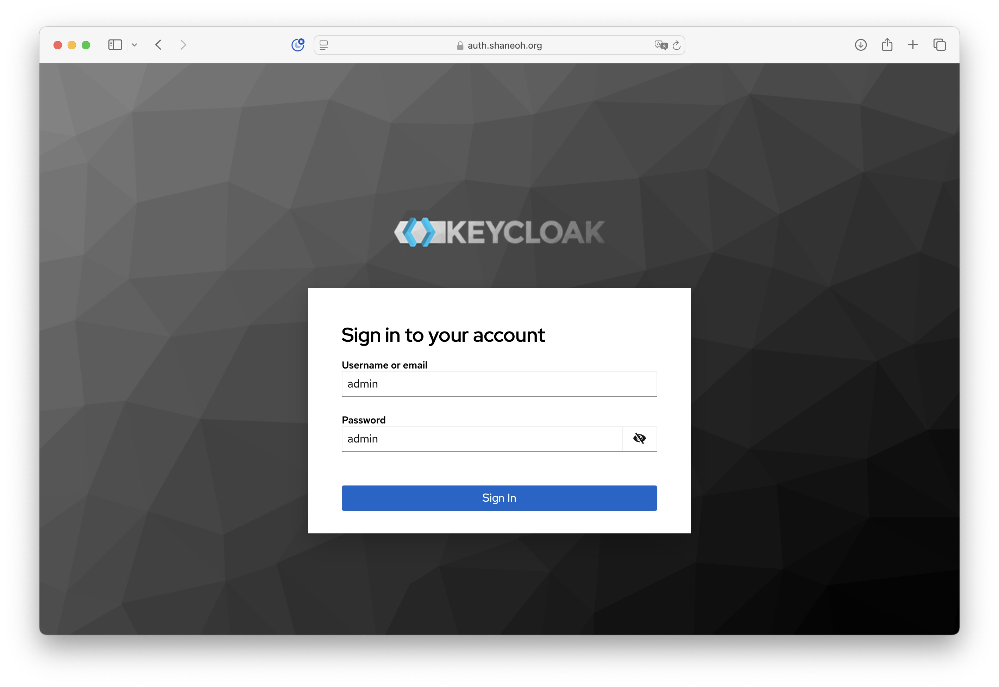
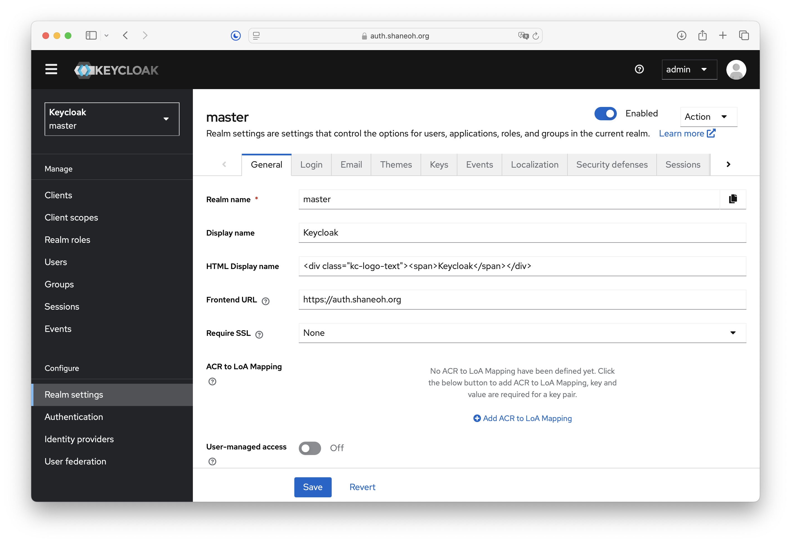

Introduction to Keycloak
Keycloak is an open-source Identity and Access Management (IAM) solution aimed at modern applications and services.
Features
- Single Sign-On (SSO): Users authenticate with Keycloak rather than individual applications.
- Identity Brokering and Social Login: Enable login with social networks like Google, Facebook, etc.
- User Federation: Connect to existing user directories like LDAP or Active Directory.
- Admin Console: Manage all aspects of Keycloak through a web-based GUI.
- Standard Protocols: Supports OAuth 2.0, OpenID Connect, and SAML.
Getting Started
To get started with Keycloak on K8s, follow the official guide:
Kubectl create
Use the following command to deploy Keycloak on your Kubernetes cluster:
kubectl create -f https://raw.githubusercontent.com/keycloak/keycloak-quickstarts/refs/heads/main/kubernetes/keycloak.yamlThis creates a deployment and a service in the default namespace. Before exposing the admin console via ingress,
Change Default Admin User
Keycloak requires replacing the pre-configured admin account with a new one. This can be done by accessing the web-based admin console. Access the admin console within your local network (via NodePort, etc.).
Log in with the username admin and password admin as described in the guide.

Navigate to Manage > Users > User list and click the Add user button. Add a new admin user with a name you desire. This will create a new account without a password.
Before deleting the old admin account, create the new one first and set a password. Otherwise, you will no longer be able to configure the account from the web.
If you are willing to create a new admin account with the same name, Navigate to Configure > Realm settings > Login and toggle the Edit username button.
After creating a new user, set a password for the new admin account by: Navigating to Credentials tab and clicking the Reset Password button.
Now you can delete the old admin account.
Require SSL (Optional)
Keycloak requires SSL connection for external requests by default. Turn it off by navigating to Configure > Realm settings > General and toggle the Require SSL button.
Frontend URL
Lastly, just before exposing the admin console with ingress change the Frontend URL value in Configure > Realm settings > General.

Expose Admin Console via Ingress
After configuring the upper settings, you are now ready to make the admin console accessable to the world!
apiVersion: networking.k8s.io/v1
kind: Ingress
metadata:
name: ingress-keycloak
annotations:
cert-manager.io/cluster-issuer: "letsencrypt-prod"
nginx.ingress.kubernetes.io/rewrite-target: /
spec:
ingressClassName: nginx
tls:
- hosts:
- auth.shaneoh.org
secretName: letsencrypt-tls
rules:
- host: auth.shaneoh.org
http:
paths:
- path: /
pathType: Prefix
backend:
service:
name: keycloak
port:
number: 8080